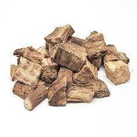
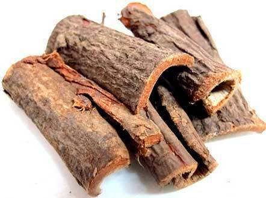

피부 통증 및 병변
갈근(칡)

갈근은 칡이라고도 하는데, 생갈근을 즙을 내어 마시게 되면 아토피성 피부염 환자의 화끈거림이나 돌기가 없어지는 데 좋다.
유근피

아토피에 좋은 약초로 유근피라는것이 있습니다.유근피는 피부 미용에도 좋은 약초로 알려졌지만
피부 부스럼과 종기 그리고 상처 치료에도 좋으며 아토피 피부염에도 도움이 되는데
끓여서 마시거나 아니면 유근피를 목욕물에 타서 목욕을 하면 된다.
뒤로가기